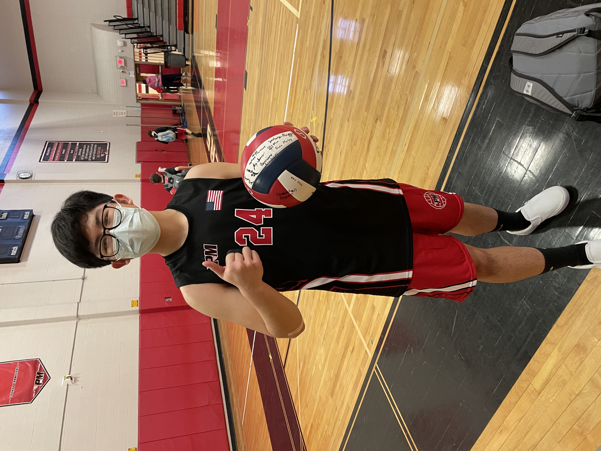
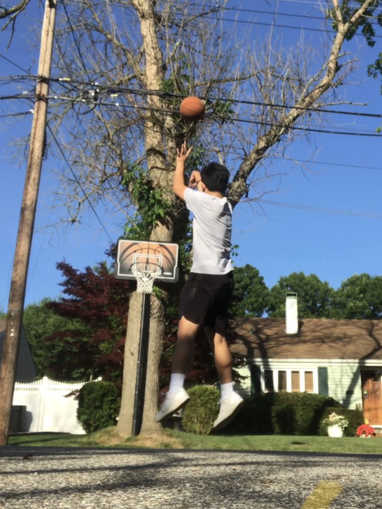

Fun Facts!
- I was born and raised in Medford, New York to parents of Vietnamese origin.
- I enjoying playing basketball and volleyball in my free time. In fact, I played on my schools first ever Boy's Volleyball Team.
 
- I also played varsity badminton as both a singles and doubles player!
- I often invest in and build Lego sets and design Lego creations of my own!
- I sometimes edit and post videos on my youtube channel.
- Aside from playing sports, I love to cook and explore new foods (except seafood)!
- Given my love of food, I also love and look forward to traveling.
- I have a deep fascination for aviation and enjoy researching about various aircrafts.
- On top of all this, I love spending time with my friends and family.